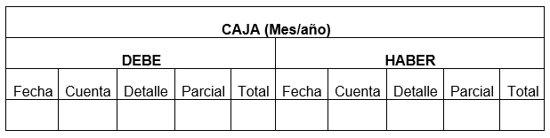

Registros Contables
Concepto
Los registros contables son todas las anotaciones enfocadas en la revisión y control de las transacciones de una empresa, lo que permite reconocer oportunamente la posición financiera actual. La importancia de este tipo de registros es tal, que son requeridos para fines fiscales, cumplimiento de responsabilidades legales y para el desarrollo de las supervisiones financieras. Es por lo anterior, que se aconseja que la contabilidad de tu empresa sea llevada por un servicio contable en Colombia, profesional y confiable, ya que la correcta realización de este tipo de actividades, contribuyen al crecimiento y a la estabilidad de tu empresa.
Ahora bien, otro punto a resaltar de los registros contables es que estos son el reflejo, asientos de diario y libros de contabilidad que describen las transacciones contables de una empresa, respaldando así la producción de estados financieros. Es por esto que deben conservarse durante varios años, para que las entidades externas puedan inspeccionarlos y verificar que los estados financieros derivados de ellos sean correctos.
Aspectos básicos:
- Cualquier transacción inicia un procedimiento contable: Desde cualquier compra o venta que realices. La idea es hacer un registro de cada transacción financiera. Para este proceso es recomendable contar con el apoyo de un servicio contable.
-
Estas transacciones se registran en los diarios: Este es el punto cero
de la contabilidad, cada procedimiento contable debe anotarse en un diario, el cual es el
registro de cada transacción financiera a medida que ocurre.
Puedes tener diarios separados para ventas y recibos de efectivo y otros para desembolsos, o solo uno en el que se incluya todos los tipos de transacciones. Cualquiera de los dos enfoques está bien, pero lo más importante para recordar, es registrar cada entrada y mantener los diarios actualizados, este proceso puede ser facilitado con el apoyo de los servicios contables en Colombia.
- Agrupar todas las entradas utilizando el libro mayor: Aquí es donde los servicios contables en Bogotá se encargan de transferir o publicar cada una de las entradas del diario en su lugar apropiado en el libro mayor por tipo de transacción. Esto agiliza la búsqueda de transacciones individuales y también proporciona una base en algún momento, a menudo al final del mes o del trimestre.
- Preparar el balance de prueba: Aquí es donde se resumirán todas tus entradas de débito las cuales deberán coincidir; si no es así, se deberán remitir a los registros de transacciones en su diario y trabajar para ver dónde ocurrió el error.
- Preparar el estado financiero: En este punto el trabajo duro vale la pena, ya que este es el documento que los prestamistas, agencias gubernamentales o cualquier entidad requerirá para saber quién eres financieramente antes de hacer negocios contigo.
Cómo se presentan los registros contables
En estos registros se refleja todo movimiento contable del ente económico (empresa) con el objetivo de proporcionar información financiera del mismo. Allí intervienen dos cuentas, por un lado, el egreso que cuando aumenta se registra por el ‘Debe’, y por otro lado el activo que cuando disminuye se registra por el ‘Haber’.
Tipos de Registros contables:
-
Registros obligatorios o indispensables:
Como su nombre lo indica, son los libros obligatorios que se exigen legalmente.
- El libro Diario: En él se registra todas las operaciones que la empresa realiza día a día, estos registros se denominan asientos y se realizan en orden cronológico, según lo indica el Código de Comercio en el ART. 45 “Expresa que el libro Diario se asiente día por día y según se vayan efectuado las operaciones.”
- El libro de Inventarios y Balances: Aquí se registra desde el inicio hasta el final del detalle del patrimonio. Según el Código de Comercio en el ART. 44: Establece como libros indispensables al Diario y al Inventario y Balance.
-
Registros no obligatorios:
Este tipo de libros no los exige la ley, sino que son los que la empresa crea necesario tener dependiendo de cada actividad que se realice en la empresa.
- Estado de flujos de efectivo: Es el registro de entradas y salidas de dinero en efectivo de la empresa.
- Estado de resultados: En este libro se registra todos los ingresos de negocios y las transacciones de gastos con el objetivo de medir la rentabilidad del negocio. Se diferencia del anterior debido a que en estos se registra el estado del trabajo que los clientes no han pagado y gastos acumulados sin pagar aún.
- Balance: Allí va el registro de los activos y pasivos de la empresa.
Datos importantes de un registro contable:
- Fecha de la anotación
- Número que de la anotación durante el ejercicio económico.
- Cuentas intervinientes: código y denominación.
- Importes registrados a cada cuenta (si son cargos o bonos).
- Descripción de la operación.
Beneficios de llevar un registro contable:
- Tener un registro detallado de los bienes de la empresa.
- Controlar el flujo de efectivo teniendo en cuenta las necesidades de la empresa.
- Soporte de los movimientos financieros antes terceros.
- Registrar las responsabilidades financieras de la empresa.
- Controlar el estado económico de la entidad.
Dato importante: La información registrada en los libros contables es para uso tanto de la empresa como para el Estado, ya que estos datos son analizados por ellos para determinar si la entidad privada cumple con la legislación